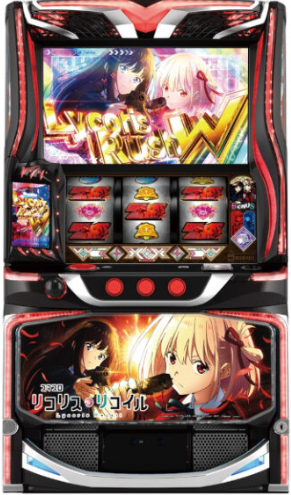

目次

スマスロ リコリス・リコイルLYCORIS RECOIL ｜ Sammy（サミー）
カバネリ・防振りに続くサミー第3の疑似ボ連打機。弱レア役「変換」からCZ当選を目指す通常時と、純増約8.4枚/GのRUSH型ATで大量出玉を目指すゲーム性。導入約20,000台。
リコリス・リコイル スペック・機械割
| 設定 | CZ確率 | AT初当り | 機械割 |
|---|---|---|---|
| 1 | 1/198.7 | 1/328.8 | 97.9% |
| 2 | 1/196.9 | 1/323.4 | 98.9% |
| 3 | 1/191.3 | 1/312.1 | 101.3% |
| 4 | 1/183.3 | 1/288.3 | 106.1% |
| 5 | 1/175.9 | 1/271.6 | 110.4% |
| 6 | 1/169.4 | 1/256.7 | 114.6% |
遊技時間別・理論差枚数の目安
| 設定 | 機械割 | 差枚数/1h | 差枚数/3h | 差枚数/5h | 差枚数/8h |
|---|---|---|---|---|---|
| 1 | |||||
| 2 | |||||
| 3 | |||||
| 4 | |||||
| 5 | |||||
| 6 |
リコリス・リコイル 設定判別ポイント
- ① AT初当り確率（最重要）：設定1（1/328.8）〜設定6（1/256.7）と全設定で段階的な差あり。
- ② CZ確率：設定1（1/198.7）〜設定6（1/169.4）。AT初当りと合わせて総合判断。
- ③ その他の設定示唆：導入後に解析データが公開され次第、追記予定です。
リコリス・リコイル 天井・リセット
| 天井種別 | 条件 | 恩恵 |
|---|---|---|
| AT間天井 | 850G+α | AT当選 |
| CZ間天井 | 600G | CZ当選 |
| リセット後AT天井 | 600G（短縮） | AT当選 |
| リセット後CZ天井 | 250G（短縮） | CZ当選 |
| 上位CZ失敗後 | 250G | 確定CZ |
規定G数チャンスゾーン
リコリス・リコイル 設定変更・朝一恩恵
| 項目 | 内容 |
|---|---|
| AT天井短縮 | 850G → 600Gに短縮 |
| CZ天井短縮 | 600G → 250Gに短縮 |
リコリス・リコイル AT詳細
通常時のゲーム性
- 変換システム：弱レア役をメイン契機とする「変換」からCZ当選を目指す。
- スタンプ：リプレイで貯まり、CZのチャンスとなる。
- エピソード：規定ゲーム数からのCZ・AT直撃ルート。
- AT直撃：変換・スタンプ・規定G数のほか、AT直撃ルートも存在。
CZ（チャンスゾーン）
| CZ種類 | 成功期待度 | 特徴 |
|---|---|---|
| バトルCZ | 約53% | フリーズ発生でRUSH突入 |
| 幼少期CZ | 約83% | 高期待度CZ。フリーズ発生でRUSH突入 |
ボーナス種類・獲得枚数
| ボーナス名 | 図柄 | 獲得枚数 |
|---|---|---|
| Lycoris BONUS | 赤7シングル揃い | 約100枚 |
| Lycoris BONUS W | 赤7ダブル揃い | 200枚以上 |
| EPISODE BONUS | 赤7ダブル揃い（一部） | 約300枚 |
| りこりすぷらっしゅBONUS | 青7揃い | 平均約385枚 |
AT「リコリスラッシュ」
| 項目 | 内容 |
|---|---|
| 純増 | 約8.4枚/G |
| 流れ | プロローグ → 規定枚数獲得 → RUSH突入 |
| RUSH前半 | 50G+α・ボーナス当選期待度約60% |
| RUSH後半 | 10G+α・ST型の高速連チャンゾーン |
| ウォールナットハック | RUSH中に発生でRUSH性能が大幅強化 |
RUSH種類
| RUSH名 | 対応役優遇 | 特徴 |
|---|---|---|
| 千束RUSH | チェリー優遇 | 千束メインの演出 |
| たきなRUSH | スイカ優遇 | たきなメインの演出 |
上位AT「リコリスラッシュW」
| 項目 | 内容 |
|---|---|
| 突入条件 | AT中POINT MAX → 上位CZ「リコイル オブ リコリス」（10G・成功期待度約70%）突破 |
| 性能 | ボーナスが全てW揃い以上＋常に才能レベル2点灯 |
設定判別ツール
CZ回数とAT回数を入力してください。CZ確率・AT初当り確率から各設定の出現しやすさを推定します。
リコリス・リコイル よくある質問
スマスロ リコリス・リコイルの設定6機械割は？
設定6の機械割は114.6%です。6段階設定で設定3（101.3%）から機械割100%を超えます。コイン単価は設定1で約3.2円、導入予定台数は約20,000台です。
スマスロ リコリス・リコイルの天井は何G？
AT間天井は850G+α、CZ間天井は600Gです。リセット後はAT天井が600G・CZ天井が250Gに短縮されるため、朝一リセット狙いが有効です。
リセット後の天井恩恵は？
設定変更後はAT天井が850G→600G、CZ天井が600G→250Gに大幅短縮されます。250G以内のCZ当選を目安に朝一の立ち回りが可能です。
スマスロ リコリス・リコイルのCZ確率に設定差はありますか？
CZ確率には設定差があり、設定1が1/198.7、設定6が1/169.4です。AT初当り確率も設定1が1/328.8、設定6が1/256.7と明確な差があります。高設定ほどCZ・ATともに当選しやすくなります。
スマスロ リコリス・リコイルの純増は何枚ですか？
AT「リコリスラッシュ」の純増は約8.4枚/Gです。50枚あたり約31.8G回る仕様で、AT中のBONUS消化も高速です。
ボーナスの種類と獲得枚数は？
Lycoris BONUS（赤7シングル・約100枚）、Lycoris BONUS W（赤7ダブル・200枚以上）、EPISODE BONUS（約300枚）、りこりすぷらっしゅBONUS（青7・平均約385枚）の4種類があります。ボーナス確率は約1/18と高頻度です。
リコリスラッシュとは何ですか？
リコリスラッシュは本機のメインATです。プロローグからスタートし、規定枚数獲得後にRUSHへ突入します。RUSH前半は50G+αでボーナス当選期待度約60%、後半は10G+αのST型高速連チャンゾーンです。
千束RUSHとたきなRUSHの違いは？
千束RUSHはチェリーが優遇され、たきなRUSHはスイカが優遇される仕様です。対応役成立時のボーナス当選率が異なり、それぞれのキャラクターメインの演出が展開されます。
リコリスラッシュWとは何ですか？
リコリスラッシュWは上位ATです。AT中のPOINT MAXから突入する上位CZ「リコイル オブ リコリス」（10G・成功期待度約70%）を突破すると突入します。ボーナスが全てW揃い以上になり、常に才能レベル2が点灯する強力な出玉トリガーです。
POINTシステム・リロードとは？
ボーナス中は全役でPOINT獲得抽選が行われ、POINTがMAXに到達すると上位CZ「リコイル オブ リコリス」を獲得します。リロード発生時は上位CZを経由せずRUSH前半50Gからリスタートでき、連チャンが継続します。
CZは何種類ありますか？
CZは「バトルCZ」と「幼少期CZ」の2種類があります。バトルCZの成功期待度は約53%、幼少期CZは約83%と高めです。どちらもフリーズ発生でRUSHに突入します。
通常時の変換システムとは何ですか？
通常時は弱レア役をメイン契機とする「変換」からCZ当選を目指すゲーム性です。変換のほかにリプレイで貯まる「スタンプ」や規定ゲーム数からのCZ・AT直撃（エピソード）ルートも存在します。
規定G数のチャンスゾーンは？
100G・250G・400G・600G・750Gが規定G数のチャンスポイントです。これらのG数到達時にCZ・AT直撃のチャンスがあり、天井狙い・やめ時判断の参考になります。
スマスロ リコリス・リコイルのやめ時は？
AT終了後の即やめが基本です。ただし上位CZ失敗後は250Gで確定CZが発動するため即やめ厳禁です。朝一リセット狙いの場合は250G以内のCZ当選を目安にしましょう。
スマスロ リコリス・リコイルの導入日はいつですか？
導入日は2026年9月7日（月）予定です。サミー製のスマスロAT機で、導入予定台数は約20,000台（増産の可能性あり）です。
公式PR動画
（動画情報は準備中です）